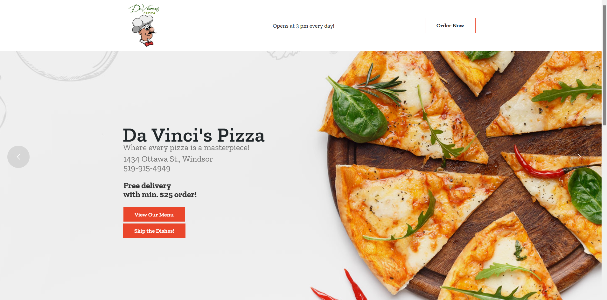

Davinci's Pizza
Desktop View
The desktop view of this site is clean, and has good spacing. Nothing is conflicting and everything is easy to find.
Mobile View
The movile view of this site is where problems start to happen: the image has items running into eachother and a hamburger icon appears, only to reveal the open hours displayed on the desktop view at the top.
Review:
This company is using a responsive design, the website changes as the window is being resized dynamically.
No image responsive technologies are present.
I like the overall layout of the site, and I also appreciate its clean design.
I would change the hamburger icon to either display more links at the top or completely remove it to avoid confusion.